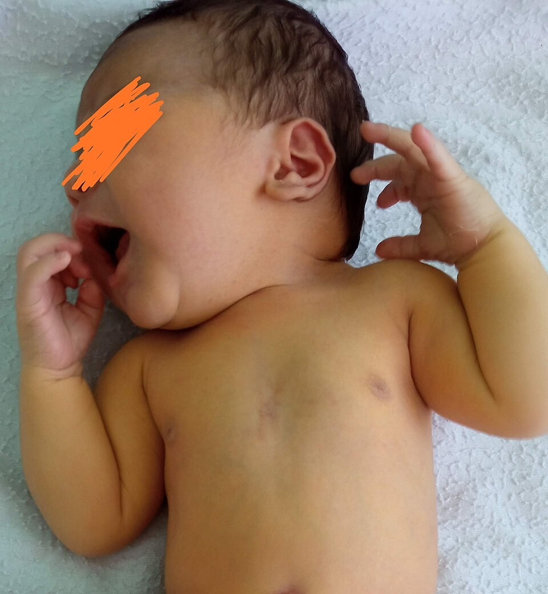
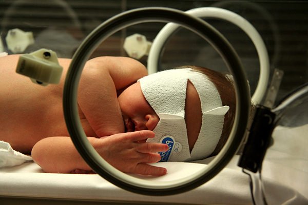

衛教目錄 › 新生兒與成長 › 新生兒黃疸
新生兒黃疸
大多數寶寶在出生後幾天皮膚會變黃，這是新生兒常見的生理性黃疸，通常 1–2 週內自己退。少數寶寶膽紅素太高需要照光，才不會傷害腦部；另外，大便顏色變淡可能是膽道閉鎖的警訊，要立刻就醫。
第 2–3 天生理性黃疸開始出現，第 3–5 天最黃
24 小時內出生第一天就變黃，一定要立即檢查
大便卡兒童健康手冊裡的大便辨識卡，出生後每天對照
1為什麼新生兒會黃？
紅血球比較多
寶寶在媽媽肚子裡需要比較多紅血球，出生後多餘的會被分解。
產生膽紅素
紅血球分解後產生黃色的膽紅素，累積在皮膚和眼白。
肝臟還不成熟
新生兒的肝臟處理膽紅素的能力，要幾天到幾週才會跟上。
從便便排出
膽紅素經過肝臟處理後隨便便排出；吃得多、便便多，黃疸退得快。
2怎麼觀察？

Muago／Wikimedia Commons／CC0，已裁切
- 在自然光下看：白天靠窗的地方，用手指輕壓額頭、鼻尖或胸口的皮膚，放開時看顏色是不是黃黃的。
- 看眼白和牙齦也會黃。
- 由頭往腳黃：黃疸通常從臉開始，越嚴重會往胸口、肚子、大腿、手腳延伸。
- 肉眼只能參考：肉眼判斷膽紅素並不準，尤其膚色較深的寶寶；有疑慮就讓醫護人員用皮膚測量儀或抽血檢查 [1]。
- 記錄吃奶與尿布：出生第 4–5 天後，每天應有約 6 片以上濕尿布、3–4 次以上大便，便便從黑綠色胎便轉成黃色。
3餵母乳與黃疸
出生第一週：吃不夠的黃疸
- 原因
- 母乳還沒充足，寶寶吃得少、便便少，膽紅素排不出去
- 怎麼辦
- 多餵：每天 8–12 次，有效含乳；必要時由醫師評估補充擠出的母乳或配方奶 [1]
2 週以後：母乳性黃疸
- 原因
- 母乳中的成分讓膽紅素回收增加，黃疸可持續到 2–3 個月
- 怎麼辦
- 寶寶吃得好、體重增加好、大便黃色，通常不需要停母乳；但要讓醫師檢查排除其他原因
不要給新生兒喝水或葡萄糖水來「退黃」，不但沒效，還會讓寶寶喝奶變少 [1]。
4照光治療

Martybugs／Wikimedia Commons／CC BY 3.0
- 原理：特定波長的藍光把皮膚裡的膽紅素轉換成容易排出的形式。
- 何時需要：醫師依寶寶的出生週數、出生後幾小時、膽紅素數值和危險因子決定，不是只看一個固定數字 [1]。
- 照光期間可以繼續餵奶，餵奶時可以暫時抱出來。
- 常見現象：便便變稀、變綠，皮膚可能有些紅疹，停照後會好。
- 停照後有些寶寶需要再驗一次，確認沒有回升。
5蠶豆症（G6PD 缺乏症）寶寶
台灣新生兒篩檢包含蠶豆症。這類寶寶的紅血球比較容易被某些物質破壞，黃疸可能比較嚴重，醫師會更密切追蹤。生活中請避免：
- 樟腦丸（萘丸）：衣物、櫃子都不要放，借來的舊衣服也要清洗曬過
- 蠶豆及蠶豆製品（媽媽哺乳期間也建議避免）
- 紫藥水（龍膽紫）
- 部分藥物與中草藥（如磺胺類藥物、部分抗瘧藥、川黃連等）：看病時主動告訴醫師、藥師寶寶有蠶豆症
寶寶如果突然變得很黃、臉色蒼白、尿液變成茶色，請立即就醫。
6大便卡：早期發現膽道閉鎖
膽道閉鎖是嬰兒的膽管阻塞，膽汁流不到腸子，所以大便顏色會變淡。若能在出生 60 天內手術，效果明顯較好。台灣從 2004 年起把嬰兒大便辨識卡放進兒童健康手冊，讓更多寶寶及早被發現 [5,6]。
- 每天對照：出生後到 4 個月大，尤其 1 個月內，每次換尿布順便看一下。
- 大便顏色變淡（落在卡上的異常色），或尿液變深黃、像茶：不要等，立刻就醫，並把尿布或照片帶給醫師看。
- 黃疸超過 2 週還沒退，即使大便看起來正常，也請讓醫師檢查。
7常見迷思
- 「曬太陽可以退黃？」不建議。陽光照射的效果不穩定，寶寶容易曬傷、過熱或著涼，而且會延誤真正需要的治療 [1]。
- 「黃疸要停母乳？」大多不需要；請和醫師討論，母乳的好處很多。
- 「喝葡萄糖水可以退黃？」沒有效，反而讓寶寶喝奶變少 [1]。
- 「吃中藥、茵陳退黃？」不建議，可能傷肝或含不明成分，蠶豆症寶寶更危險。
8出現這些情形，請就醫
- 出生 24 小時內就變黃 → 立即檢查
- 黃到肚子以下、大腿、手掌腳掌，或越來越黃
- 寶寶很想睡、叫不醒、吸奶無力、尿布變少
- 出現高音調哭聲、身體向後弓、發燒、抽搐 → 立即急診
- 大便顏色變淡（灰白、淡黃），或尿液深黃如茶 → 立即就醫
- 黃疸超過 2 週仍未退（早產兒 3 週）
- 早產（未滿 38 週）、蠶豆症、媽媽和寶寶血型不合、之前的孩子需要照光，醫師會更密切追蹤
近五年實證重點（2026/11 整理）
- AAP 2022 改版：照光與換血門檻依出生週數（35–40 週以上）與是否有神經毒性危險因子分成不同的時數曲線；整體門檻較 2004 年版略為提高，以減少不必要的照光 [1]。
- 新增「升級照護」（escalation of care）門檻：換血門檻減 2 mg/dL [1]。
- 危險因子分兩類：①高膽紅素血症危險因子（影響追蹤）；②神經毒性危險因子（降低治療門檻）[1]。
- 不再建議以水或葡萄糖水補充；支持母乳哺育並依需要補充母乳或配方 [1]。
- 台灣：大便卡全面篩檢後，60 天內接受 Kasai 手術比例上升；2004–2023 年全國膽道閉鎖發生率約 1.55／萬活產，後疫情期晚期 Kasai（> 60 天）比例由 35.3% 降至 16.0% [5,6]。
危險因子（AAP 2022）
| 類別 | 內容 | 影響 |
|---|---|---|
| 神經毒性危險因子 | 出生週數 < 38 週；白蛋白 < 3.0 g/dL；同種免疫溶血（直接抗球蛋白試驗陽性）、G6PD 缺乏或其他溶血疾病；敗血症；過去 24 小時臨床明顯不穩定 [1] | 使用較低的照光與換血門檻 |
| 高膽紅素血症危險因子 | 較低週數；出院前膽紅素接近照光門檻；24 小時內出現黃疸；溶血；之前的手足需照光；家族遺傳性紅血球疾病；僅哺餵母乳且攝取不足；頭血腫或明顯瘀傷；唐氏症；母親糖尿病巨嬰 [1] | 決定出院後追蹤的時機 |
何時測膽紅素（AAP 2022）
- 出生 24 小時內出現黃疸：儘速（數小時內）測 TcB 或 TSB [1]。
- 所有新生兒：出院前或出生 24–48 小時內測 TcB 或 TSB，依時數曲線判讀 [1]。
- TcB 需以 TSB 確認：TcB 距照光門檻 3 mg/dL 以內，或 TcB ≥ 15 mg/dL；照光後不再以 TcB 追蹤 [1]。
- 母親抗體篩檢陽性或未知：測新生兒直接抗球蛋白試驗（DAT）[1]。
- G6PD：原因不明的黃疸、照光中仍上升、突然上升或降後回升、需要升級照護時檢測 G6PD 活性 [1]；台灣新生兒篩檢已包含 G6PD。
- 上升速度：兩次數值可計算每小時上升速度，上升過快提示溶血 [1]。
照光與換血門檻請以 AAP 2022 時數曲線為準，可使用依據該指引設計的線上計算工具 BiliTool，輸入出生週數、時數、膽紅素與危險因子。
照光與升級照護
| 項目 | 建議 |
|---|---|
| 開始照光 | TSB 達到依週數與神經毒性危險因子決定的時數門檻；使用高強度照光（藍光 LED）[1] |
| 居家照光 | 可考慮於 ≥ 38 週、無神經毒性危險因子、膽紅素略高於門檻、家庭可配合追蹤的嬰兒 [1] |
| 停止照光 | TSB 低於開始照光時門檻至少 2 mg/dL [1] |
| 停照後回升 | 依危險因子（< 38 週、溶血、早期開始照光）安排回測 [1] |
| 升級照護 | TSB ≥ 換血門檻減 2 mg/dL：緊急處理（轉至可換血的單位、高強度照光、每 2 小時測 TSB、白蛋白、CBC、血型與交叉試驗、評估溶血），必要時靜脈輸液 [1] |
| IVIG | 同種免疫溶血且 TSB 在升級照護範圍：0.5–1 g/kg，輸注 2 小時，必要時 12 小時後重複 [1] |
| 換血 | TSB 達換血門檻，或任何數值合併急性膽紅素腦病變徵象（嗜睡、張力低下、吸吮差 → 張力增加、角弓反張、高音調哭聲、發燒、抽搐）[1] |
延遲性黃疸與膽汁滯留
- 黃疸超過 2 週（足月兒；狀況良好的純母乳寶寶可觀察到 3 週）：測總膽紅素與直接（或結合型）膽紅素 [3]。
- 結合型膽紅素 > 1.0 mg/dL 即為異常，需進一步評估膽汁滯留，並盡速轉介小兒腸胃科 [3]。
- 膽道閉鎖：灰白便、深色尿、肝腫大；以超音波、肝功能、GGT、肝膽核醫掃描或肝切片評估；Kasai 手術越早越好，60 天內預後較佳 [3,5]。
- 非結合型延遲黃疸：母乳性黃疸最常見；也需考慮甲狀腺低下（新生兒篩檢結果）、溶血、G6PD 缺乏、Gilbert／Crigler-Najjar 症候群、幽門狹窄 [2]。
參考資料
- Kemper AR, Newman TB, Slaughter JL, et al. Clinical practice guideline revision: management of hyperbilirubinemia in the newborn infant 35 or more weeks of gestation. Pediatrics. 2022;150(3):e2022058859. doi:10.1542/peds.2022-058859 AAP 指引
- Slaughter JL, Kemper AR, Newman TB. Technical report: diagnosis and management of hyperbilirubinemia in the newborn infant 35 or more weeks of gestation. Pediatrics. 2022;150(3):e2022058865. doi:10.1542/peds.2022-058865 AAP 技術報告
- Fawaz R, Baumann U, Ekong U, et al. Guideline for the evaluation of cholestatic jaundice in infants: joint recommendations of the NASPGHAN and ESPGHAN. J Pediatr Gastroenterol Nutr. 2017;64(1):154–168. doi:10.1097/MPG.0000000000001334 NASPGHAN/ESPGHAN 指引
- BiliTool™：依 AAP 2022 指引設計的新生兒膽紅素時數曲線計算工具。https://bilitool.org/ 工具
- Hsiao CH, Chang MH, Chen HL, et al. Universal screening for biliary atresia using an infant stool color card in Taiwan. Hepatology. 2008;47(4):1233–1240. doi:10.1002/hep.22182 台灣資料
- Tung HF, Jiang JH, Lee SY, et al. Biliary atresia incidence in Taiwan before, during, and after the COVID-19 pandemic: a nationwide population-based study. J Pediatr Gastroenterol Nutr. 2026;83(5):849–854. doi:10.1002/jpn3.70542 台灣資料
文獻搜尋截至 2026 年 11 月。NASPGHAN/ESPGHAN 2017 膽汁滯留指引尚未改版，仍為主要參考，故雖超過五年仍列入。
本頁內容整理於 2026 年 11 月，供門診衛教與醫療人員參考，不能取代個別的診察與判斷。照光門檻請以 AAP 2022 時數曲線及所屬院所流程為準。